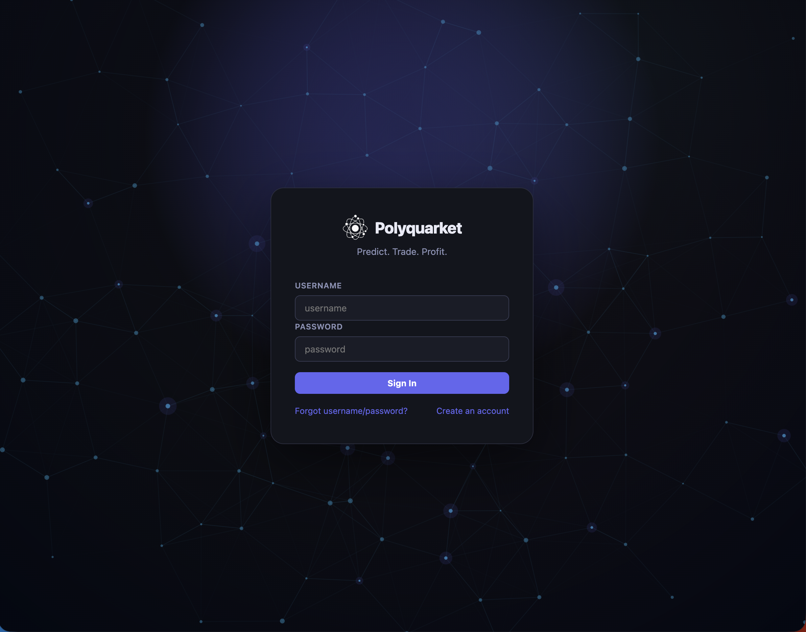

Polyquarket
A prediction market platform inspired by Polymarket and Kalshi, built for a University of Chicago Physics PhD department event. Users trade on outcome probabilities across department-specific questions using play money, with real-time market pricing, automated resolution, and a live leaderboard to drive engagement in forecasting event outcomes.
Learn More
CheXpert Competition
Collaborated on a machine learning team project focused on automated anomaly detection in chest radiographs using the CheXpert dataset. Developed predictive models to identify key clinical findings such as Cardiomegaly, Lung Opacity, and Pleural Effusion across thousands of chest X-rays. Employed advanced ML techniques to minimize mean squared error (MSE) across multiple diagnosis labels, with scores normalized by category variance. Gained hands-on experience with medical imaging data, evaluation pipelines, and collaborative model development in a high-stakes, real-world healthcare context.
Learn More
Unsupervised Machine Learning for Analysis of Young Star Photometric Light Curves (2024)
I analyzed photometric light curves of young stars using multiple unsupervised machine learning techniques to further understanding of early star formation processes under the guidance of Professor Lynne Hillenbrand in the PMA department. In this project, I worked with data from the Kepler/K2 and Transiting Exoplanet Survey Satellite (TESS) NASA missions, which include high-precision photometry for thousands of stars in the K2 dataset and over 200,000 stars in the TESS dataset to extract relevant features.
Learn More
Tower Hopper (Platformer Game)
Designed and developed a fully functional 2D platformer game in a team of 3 where a treasure hunter ascends a dynamic tower by jumping between walls while avoiding enemies and obstacles. Implemented game physics including gravity, collision detection, and surface friction types (normal, icy, sticky) to affect movement. Built enemy AI (ghosts) with chase behavior and damage mechanics with temporary invincibility.
Learn More
An Investigation of the Robustness of Perception Based Control
Modern day control systems such as autonomous driving typically utilize image and video signals to produce feedback control. However, adversarial noise can often interfere with label prediction and thus lead to decreased robustness. This project investigates adversarial robustness of convolutional neural network (CNN) based machine perception for identifying the position of a driving car.
Learn More
Fire Detection Using Keras
For my AP Research class, I developed and implemented a convolutional neural network (CNN) in Google Colab using the Keras library to classify video footage of forest fires on the average laptop computer. The final model trained on 3,760 images taken from Kaggle and other open source datasets, achieving F1 scores of 0.96 for both the fire and non-fire classes.
Learn More